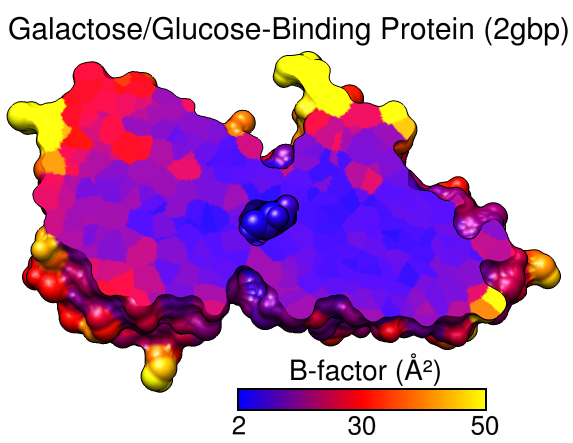

|  |
The recipe here is just one possibility; there are usually several ways to get the same or similar results. See also: presets, tips on preparing images
Start Chimera and show the Command Line (for example, with Favorites... Command Line). Fetch Protein Data Bank entry 2gbp:
Command: open 2gbpUse the "all atoms" preset and delete the water:
Command: preset apply int 2Resize the window as desired, either by dragging its lower right corner with the mouse or by using the command windowsize. The window dimensions define the aspect ratio (width:height) of output images, but image resolution (pixel dimensions) can be specified independently when an image is saved.
Command: delete solvent
The example image was saved with pixel dimensions 573 x 443 from a window of that same size:
Command: windowsize 573 443Move and scale the structure using the mouse and the Side View as you wish throughout the tutorial.
Start Render by Attribute (under Tools... Depiction) and make sure it is set to show the attributes of atoms. Look in the Attribute list to see what is available: bfactor and occupancy, which were read from the input PDB file. Choose bfactor; a histogram of the values will appear, with blue, white and red vertical bars (or thresholds).
You can control how colors will map to B-factor values by dragging the thresholds along the histogram and/or changing their colors. The Value and Color are shown for the most recently clicked or moved threshold. The Value changes when the threshold is moved, or the position can be changed by entering a value and pressing return. The Color can be changed by clicking the square color well and using the Color Editor. The slider positions in the editor can be adjusted, or a color name simply entered in the Color name field.
To make the example image, a blue threshold at value 2, a red threshold at 30, and a yellow threshold at 50 were used. Clicking Apply shows the currently defined color scheme on the structure. Once you have the desired coloring, click Create corresponding color key, but then just Close both the Color Key and Render by Attribute dialogs. Although the color key has now been set up to match the coloring scheme, we will not draw it in the Chimera window until later.
Alternatively, instead of the graphical interface, a command could have been used to perform the coloring:
Command: rangecolor bfactor key 2 blue 30 red 50 yellow(The key keyword sets up the Color Key dialog; as explained above, just close that dialog for now.) While the command is more concise, the Render by Attribute graphical interface is friendlier in that it does not require previous knowledge of the attribute names, and it provides visual (histogram) information on the value distribution.
Display the molecular surface:
Command: surfStart Per-Model Clipping (under Tools... Depiction). In that dialog, set Model to the surface (not 2gbp itself, which contains the atoms) and turn on Enable clipping. Now part of the surface but not the atoms should be chopped away. The planar cap is not yet colored by B-factor; that will have to be done in a separate step. Keep the clipping dialog open.
Hide all atoms except for the ligand, glucose:
Command: show ligandNext, adjust the clipping of the surface to the desired angle and position relative to the structure. In the Per-Model Clipping dialog, turn on Adjust clipping with mouse as below and use the specified mouse buttons to translate and rotate the clipping plane. A transparent green disk will be shown while you are making these adjustments. The mouse button assignments can be changed if you prefer. To return the mouse buttons to their normal functions, turn off Adjust clipping with mouse as below. It may be necessary to turn it on and off a few times to position the clipping plane to your satisfaction. Once that has been done, either turn off Adjust clipping with mouse as below or just Close the clipping dialog to return the mouse buttons to their normal functions.
Select all atoms and use Color Zone to make the planar cap match these atoms:
Command: select #This tool is also under Tools... Depiction in the menu. Click the Color button and increase the Coloring radius as needed to to color the whole cap. A radius of ~3-4 Å should suffice. Close that tool and clear the selection:
Command: start Color Zone
Command: ~select
Make the background white and turn off depth-cueing:
Command: set bg_color whitePosition the structure as you want it to appear in the final image, leaving room for the title and color key. If you want, save the position:
Command: ~set depth_cue
Command: savepos p1Then if you accidentally move the structure later, the position can be restored with:
Command: reset p1If you decide a later position is better, you can save it to a new name, or the same name to overwrite the previously saved position:
Command: savepos p1Open the Color Key dialog (under Tools... Utilities). In that dialog, set the Label color to black by clicking the color well and using the Color Editor. The appropriate Font size depends on the window size; 26 was used with a 573 x 443 window.
Make sure that Use mouse for key placement is turned on and then click-drag in the main window to draw the key. It may take a few tries; click-drag to start over, or click on the middle of the key to drag it around. To rotate the structure instead (and/or to prevent erasing the existing color key), turn off Use mouse for key placement. When the key is drawn to your satisfaction, adjust the Border color to black and the Border with to 2.
To add additional text to the image, click the tab to go to the Labels (2D Labels) section of the same dialog. Set the Color to black, then click in the graphics window to start a label and type to enter its contents. Each label can be repositioned by dragging and its font size can be edited to a different value. What font sizes are appropriate depends on the window size; use what you think looks best. The example image was created using window size 573 x 443, font size 30 for the main title, and font size 28 for the text above the color key. The Å symbol and superscript ² can be included by using the Insert symbol menu. Alternatively, symbols can be copied from text displays (such as a symbols page or even the preceding sentence!) and pasted into the Text area of the 2D Labels dialog. Close the dialog as soon as the labels are done, to allow rotating the structure and to avoid accidentally creating more labels.
Things to do last before saving an image:
Command: set silhouetteThe color patches on the planar cap look somewhat fuzzy because of coarse surface triangulation. Start Surface Capping:
Command: set silhouette_width 2
Command: start Surface Cappingand change the Mesh subdivision factor to 3 to make the triangles smaller and the color patches on the cap more distinct. Close that tool.
Similarly, smooth the molecular surface by increasing its vertex density:
Command: setattr s density 5Saving a session (see the File menu) right before or after saving the image is recommended if you might need to regenerate the same or a similar figure later, say at a different resolution or with modified coloring.
The image was saved at the same size as the window (573 x 443) using File... Save Image with default settings. Different pixel dimensions could be specified by entering a different value for width (height) and clicking into the height (width) field, or by using print units instead of pixels and specifying the the resolution in dpi.
{kind=link}